منظومة تعلّم رقمية بناها القسم لطلابه: موقع وتطبيق يجمع الدروس والمراجعة والدرجات، ومصحف تعليمي يسمع الطالب ويصحّح تلاوته، وألعاب تعليمية، وبرنامج قرآني ومسابقات طوال العام. كله مجاني ويفتح من الجوال.
4صفوف: السادس حتى الثالث الإعدادي
54درس تلاوة وحفظ في المصحف
284سؤال في لعبة «تحدّي النور»
17حكم تجويد ملوّن ومشروح
المحور الأول
منصة القسم: المدرسة في جيب الطالب
موقع يُثبَّت على الجوال كتطبيق، فيه كل ما يحتاجه الطالب وولي الأمر من الدرس إلى الدرجة، ويصله كل جديد بتنبيه.
دروس كل صف
الدروس مرتبة حسب خطة الوزارة، والطالب يعرف وين وصلنا في كل مرحلة.
المذكرة التوأم محلولة
مذكرات المراجعة ومواضيع الاختبار وإجاباته لكل صف، عرض وتنزيل.
درجاتي
الطالب يشوف درجاته برقمه الشخصي فقط، وما يشوف درجات غيره.
تطبيق وتنبيهات
يُثبَّت على الجوال، وفيه جرس إعلانات وتنبيه لكل جديد.
رأي الطالب وولي الأمر
تقييم سريع بالسحب، ونموذج تواصل مباشر مع القسم.
شاشة البهو
شاشة في مدخل المدرسة تعرض إعلانات القسم وسؤال اليوم.
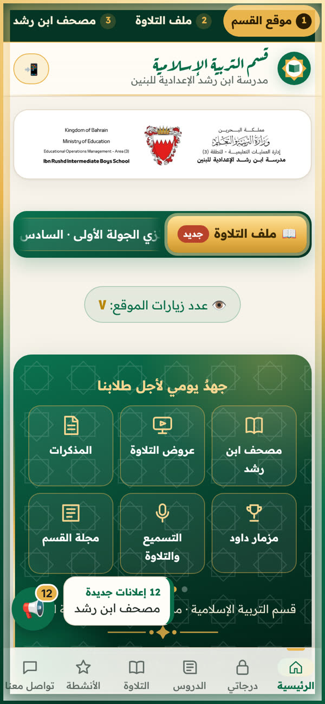
الرئيسية وملف التلاوة
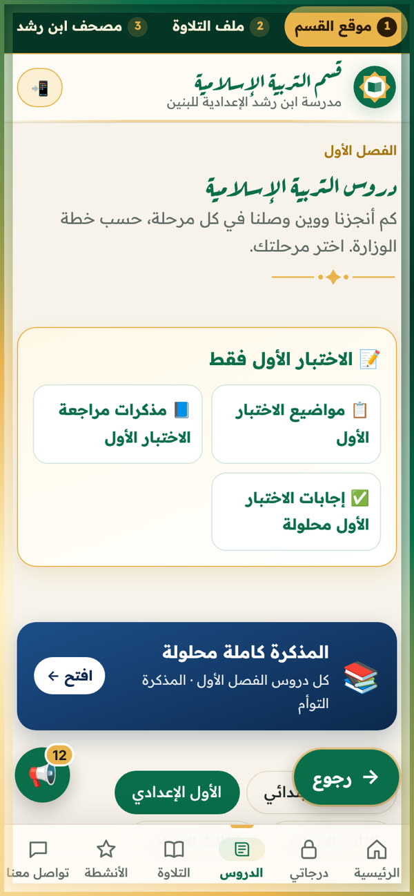
الدروس والمذكرات المحلولة
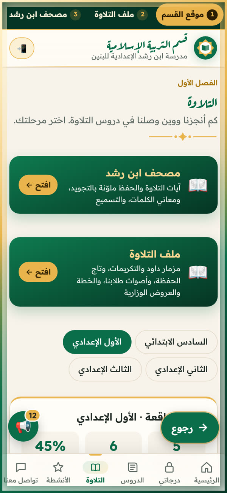
دروس التلاوة لكل صف
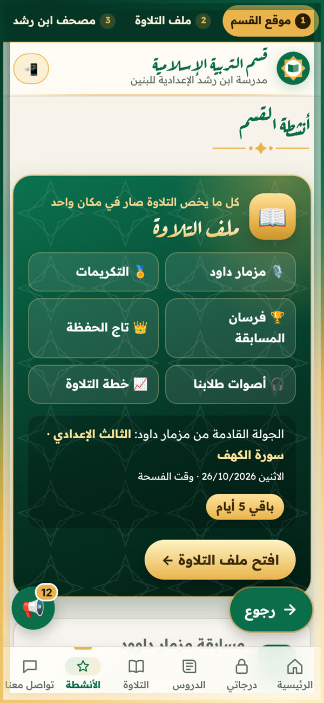
أنشطة القسم
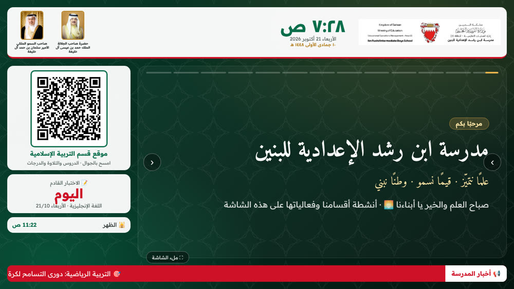
شاشة البهو في مدخل المدرسة
المحور الثاني · الأبرز
مصحف ابن رشد: مصحف يسمعك
مصحف تعليمي فيه آيات التلاوة والحفظ المقررة لكل صف، بخط مصحف المدينة، مع التجويد والمعاني. والجديد فيه: الطالب يقرأ بصوته، والمصحف يتابعه كلمة كلمة.
سمّع بصوتك جديد
الطالب يفتح المايك ويقرأ من حفظه، فتظهر الكلمات تدريجيًا. وإذا أخطأ يتوقف المصحف عند الكلمة ويُعلّمها بالأحمر حتى يصحّحها.
مراجعة التسميع
بعد كل تسميع ملخص بعدد الأخطاء، والآيات اللي قرأها بلا خطأ، والكلمات اللي وقف عندها.
آيات الحفظ والتلاوة لكل صف
54 درسًا من الصف السادس حتى الثالث الإعدادي، حسب منهج الفصل الأول.
معنى الكلمة والآية
يضغط الطالب على أي كلمة فيظهر معناها، وأحكام التجويد فيها، ومعنى الآية.
التجويد بالألوان
17 حكمًا ملوّنًا، ولكل حكم شرح ومثال من الدرس نفسه.
فكرة المصحف: فلاح طايل شاجرة، جزاه الله خيرًا وجعله في ميزان حسناته. فكرة التسميع بالمايك: أ. طلال سعود المهلهل.
المحور الثالث
التعلّم باللعب
ثلاث ألعاب مراجعة أسئلتها من مذكرات القسم المحلولة لكل صف. الطالب يراجع وهو يلعب، ويتحدّى زملاءه.
تحدّي النور
كل إجابة صحيحة كرة سلة، وخمس إجابات متتالية كرة ذهبية، ثم يرمي في الملعب. فيه وضع «الكتاب كامل» ووضع «الاختبار الأول»، وتحدٍّ بالنقاط عبر واتساب.
سُلّم المعرفة
أسئلة الاختبار الأول لكل صف على شكل سلّم يصعده الطالب.
جسر التماسيح
كل إجابة صحيحة تبني لوحًا في الجسر، والخطأ يكلّفه روحًا.
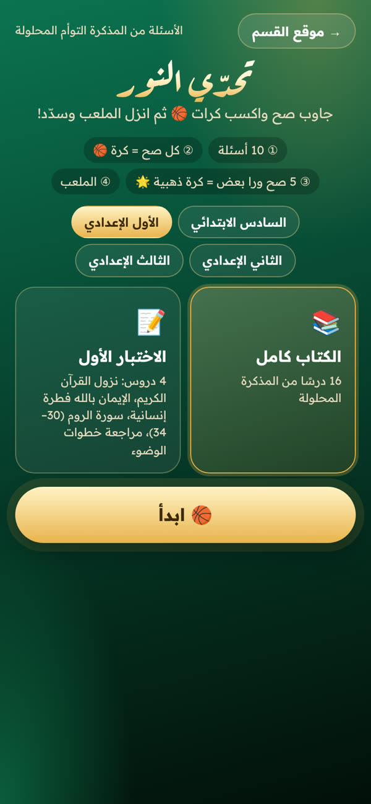
تحدّي النور
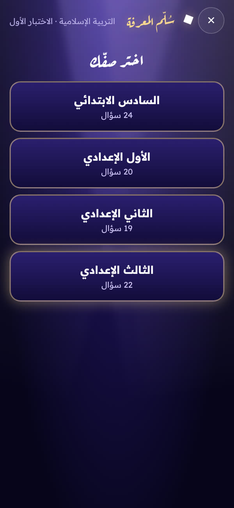
سُلّم المعرفة
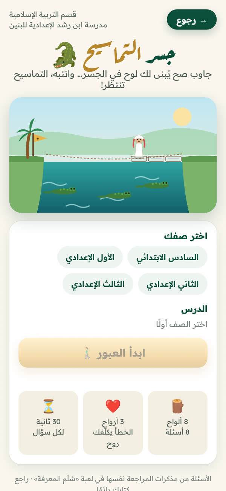
جسر التماسيح
المحور الرابع
القرآن والتلاوة طوال العام
ملف تلاوة حيّ يتحدّث تلقائيًا، يجمع البرنامج القرآني في مكان واحد ويوثّقه أولًا بأول.
مسابقة مزمار داود
جولات تلاوة بجدول معلن، ومعايير تحكيم من 40، وتوثيق وتكريم لكل جولة.
تاج الحفظة وفرسان المسابقة
لوحات شرف لمن أتمّ الحفظ وللفائزين في الجولات.
خطة التلاوة
مقرر التلاوة لكل صف، ونموذج تغذية راجعة يتابع به المعلم أداء الطالب.
أصوات طلابنا
تلاوات الطلاب بعد إخراجها، تُنشر في الموقع وفي المصحف.
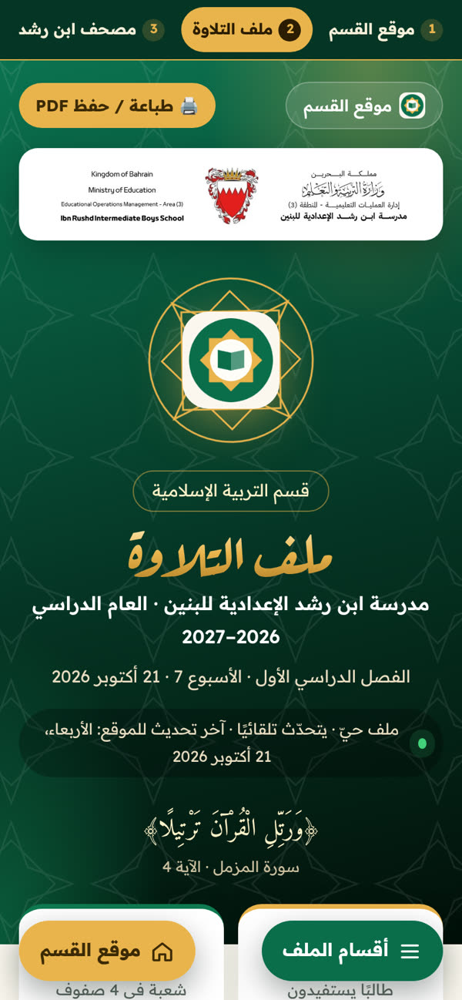
ملف التلاوة
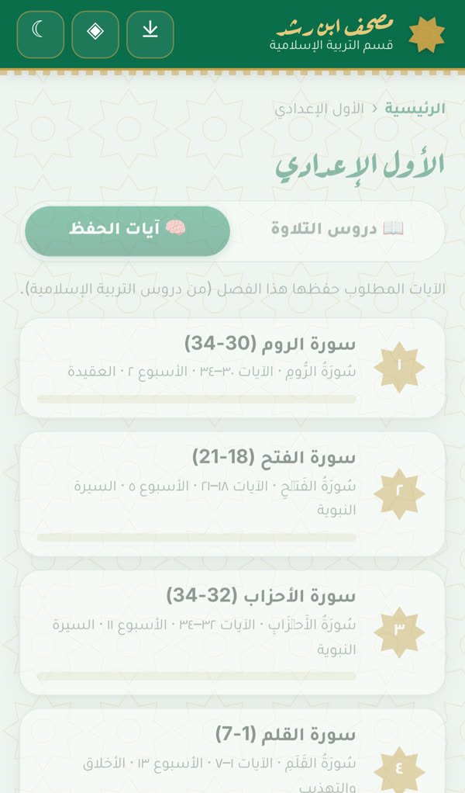
آيات الحفظ لكل صف
المحور الخامس
أنشطة وقيم
تعلّم يتجاوز الحصة: قصة وقيمة كل شهر، ومجلة للقسم، وأنشطة يشارك فيها الطالب.
قافلة طلب العلم
رحلة تفاعلية تشجّع الطالب على مواصلة التعلّم، مع قصة الشهر من حياة الصحابة.
مجلة القسم الشهرية
تحتفي بإنجازات الطلاب في التلاوة والكتابة والإلقاء، وتُقرأ كاملة من الموقع.
مركز واحات القرآن الكريم
برامج المركز وحلقاته، وآلية المشاركة فيه.
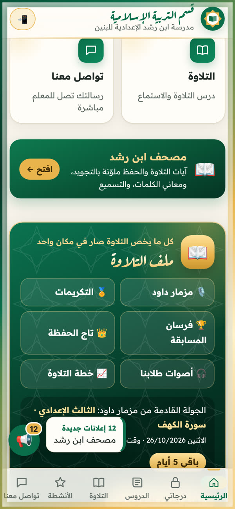
قافلة طلب العلم ومزمار داود
مقترحات للنشر
أفكار محتوى لحساب الوزارة
مقاطع قصيرة يمكن تصويرها في المدرسة مباشرة، مع نص مقترح لكل منشور.
ريل · 30 ثانية
مصحف يسمعك
لقطة قريبة لطالب يقرأ من حفظه والمايك مفتوح، والكلمات تظهر على الشاشة، ثم يتوقف المصحف عند خطأ ويصحّحه الطالب.
طالب يسمّع، والمصحف يتابعه كلمة كلمة 🎙️📖
«مصحف ابن رشد» من قسم التربية الإسلامية بمدرسة ابن رشد الإعدادية للبنين: آيات التلاوة والحفظ لكل صف، بالتجويد والمعاني، ومع خاصية التسميع بالصوت.
ريل · 20 ثانية
نراجع ونلعب
طلاب يتنافسون في «تحدّي النور» على جوالاتهم، ولقطة للكرة الذهبية بعد خمس إجابات صحيحة.
المراجعة صارت تحدّي 🏀
ألعاب تعليمية أسئلتها من مذكرات التربية الإسلامية، يراجع فيها الطالب ويتحدّى زملاءه.
كاروسيل · 5 شرائح
منصة القسم في جيب الطالب
شريحة لكل ميزة: الدروس، المذكرات المحلولة، درجاتي، التنبيهات، الباركود.
كل ما يحتاجه الطالب في مكان واحد 📲
دروس، ومذكرات محلولة، ودرجات برقمه الشخصي، وتنبيه بكل جديد، من موقع قسم التربية الإسلامية بمدرسة ابن رشد الإعدادية للبنين.
ريل · 45 ثانية
مزمار داود
لقطات من جولة المسابقة: لجنة التحكيم، طالب يتلو، ولحظة التكريم.
جولات «مزمار داود» للتلاوة 🌙
مسابقة قرآنية على مدار العام بمعايير تحكيم واضحة وتكريم لكل جولة، بمدرسة ابن رشد الإعدادية للبنين.